🌿 建华卫生所中医处方系统
用户使用手册
版本 V5.26本文档详细介绍系统的各项功能及操作方法，建议初次使用时通读全文。
一、系统简介
建华卫生所中医处方系统是一款专为中医诊所设计的信息化管理软件，涵盖患者档案管理、 中医辨证施治、处方开具、病例报告生成打印等完整诊疗流程。系统采用模块化设计， 操作简洁直观，帮助医生高效完成日常诊疗工作。
主要功能模块
👤 患者管理
患者档案录入、查询、编辑，支持按姓名、电话、病历号等多条件检索
💊 中药处方
40味药处方开具，支持剂量、煎法设置，自动计算价格，处方报告打印
📋 病例报告
完整病例信息录入，含主诉、现病史、诊断、医嘱、备注等，支持PDF导出打印
🔍 辨证施治
病症表现录入、辨证分析、诊断结论，辅助中医辨证论治
📦 药品库
药品信息管理、用法设置、方剂管理，支持拼音检索快速开药
📊 病历统计
病历记录查询与统计，支持按日期、病症等多维度查看
二、安装与启动
2.1 系统要求
| 项目 | 最低配置 | 推荐配置 |
|---|---|---|
| 操作系统 | Windows 7 | Windows 10 / 11 |
| CPU | 双核 2.0GHz | 四核及以上 |
| 内存 | 2GB | 4GB 及以上 |
| 硬盘空间 | 500MB | 1GB 及以上 |
| 数据库 | MySQL 5.7+ 或 MariaDB 10.3+ | |
2.2 安装步骤
- 将安装包解压到任意目录（建议解压到非系统盘，如
D:\ZhongYi\） - 确保已安装 MySQL 或 MariaDB 数据库服务并正常运行
- 首次启动前，需要导入数据库初始化脚本（位于
tutorial/目录） - 双击
ZhongYi.exe启动程序
三、数据库配置
首次启动软件时，系统会自动检测数据库配置。如果没有配置或配置错误， 将弹出数据库配置窗口。
3.1 配置项说明
| 配置项 | 说明 | 示例 |
|---|---|---|
| 数据库地址 | MySQL 服务器 IP 或域名 | 127.0.0.1（本机） |
| 端口 | MySQL 服务端口，默认 3306 | 3306 |
| 用户名 | 数据库登录用户名 | root |
| 密码 | 数据库登录密码 | ****** |
| 数据库名 | 中医系统使用的数据库名 | zy |
3.2 初始化数据库
如果是全新安装，需要先导入数据库初始化脚本：
- 打开 MySQL 管理工具（如 HeidiSQL、Navicat 等）
- 创建一个新数据库，建议命名为
zy，字符集选择utf8mb4 - 导入
tutorial/zy.sql初始化脚本 - 导入
tutorial/chl.sql（药材数据） - 导入
tutorial/edit.sql（补充数据） - 在数据库配置界面填写连接信息，点击"测试连接"
- 连接成功后点击"保存"，系统自动进入登录界面
四、登录系统

图 4-1 登录界面
4.1 登录步骤
- 启动程序，进入登录界面
- 在"用户名"输入框中输入您的账号
- 在"密码"输入框中输入登录密码
- 点击"登录"按钮，或按回车键确认
- 登录成功后自动进入主界面
4.2 常见登录问题
- 提示"数据库连接失败"：检查数据库服务是否启动，以及连接配置是否正确
- 提示"用户名或密码错误"：确认账号密码输入正确，注意区分大小写
- 程序启动无反应：以管理员身份运行，或检查是否被杀毒软件拦截
五、主界面概览
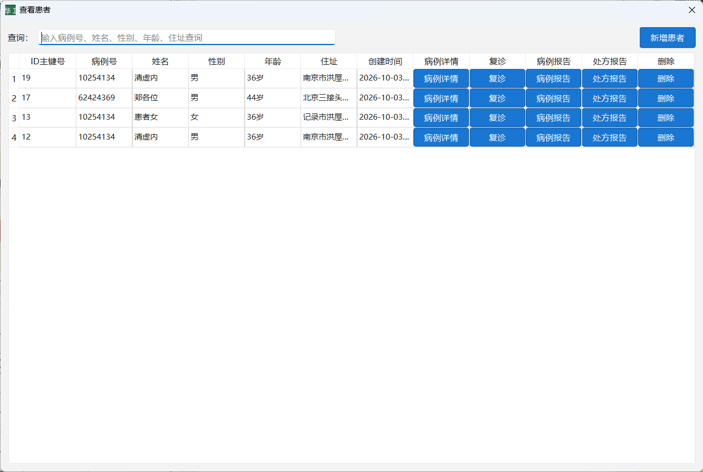
图 5-1 主界面（患者模块）
5.1 界面布局
系统主界面采用左右布局结构：
- 左侧菜单栏：包含系统所有功能入口，点击即可切换到对应功能模块
- 右侧工作区：显示当前选中功能的操作界面
5.2 功能菜单
| 菜单 | 功能说明 |
|---|---|
| 👤 用户信息 | 当前登录用户信息查看与修改 |
| 🏥 患者 | 患者档案管理，是系统最核心的模块（默认首页） |
| 📝 病症表现 | 录入患者的症状表现信息 |
| 🔍 辨证分析 | 根据病症进行辨证分析 |
| 💡 诊断结论 | 填写诊断结论 |
| 📍 针灸 | 针灸治疗方案设置 |
| 📚 方剂 | 方剂库管理 |
| 💊 药品列表 | 药品信息管理 |
| 📖 用法 | 药物用法（煎法）设置 |
| 📋 病历记录 | 历史病历查询与统计 |
六、患者管理
患者管理是系统的核心模块，包含患者档案的增删改查、病例填写、处方开具、 报告打印等完整诊疗流程。登录后默认显示此界面。
图 6-0 患者管理主界面
6.1 患者查询
左侧为患者列表区域，支持多种查询方式：
- 按姓名查询：在搜索框输入患者姓名，支持拼音首字母检索
- 按电话查询：输入电话号码搜索
- 按病历号查询：输入病历号精确查找
操作步骤
- 在顶部搜索框输入关键词
- 点击"查询"按钮或按回车键
- 搜索结果显示在下方列表中
- 点击列表中的患者记录，右侧显示该患者详细信息
图 6-1 患者列表查询界面
6.2 新增患者
- 点击"新建"按钮（或初诊按钮）
- 系统自动生成病历号（也可手动修改）
- 填写患者基本信息：
- 姓名（必填）
- 性别（必填）
- 年龄（必填）
- 住址
- 电话
- 身份证号
- 血压
- 填写完毕后点击"保存"按钮
- 保存成功后自动跳转到该患者详情页
6.3 编辑患者资料
在患者详情页，可以直接修改患者的各项信息：
- 点击需要修改的字段，直接编辑内容
- 修改完成后点击"保存"按钮
- 系统弹出"保存成功"提示即表示修改已生效
患者资料字段说明
| 字段名 | 说明 | 是否必填 |
|---|---|---|
| 姓名 | 患者姓名 | 是 |
| 性别 | 男 / 女 | 是 |
| 年龄 | 患者年龄 | 是 |
| 病证 | 患者主要病证 | 否 |
| 诊断 | 临床诊断结果 | 否 |
| 住址 | 患者家庭住址 | 否 |
| 电话 | 联系电话 | 否 |
| 病历号 | 系统自动生成，可修改 | 是 |
| 身份证号 | 患者身份证号码 | 否 |
| 血压 | 血压测量值（如 120/80） | 否 |
6.4 病例查询
病例查询用于快速查找患者的历史就诊记录，支持按姓名、病历号、 诊断等多条件模糊搜索，命中的患者记录会高亮显示。
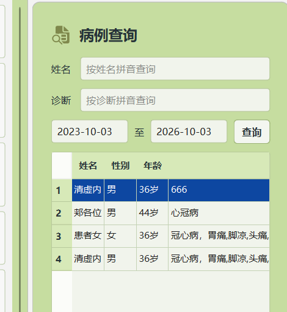
图 6-4 病例查询界面
查询方式
- 在顶部搜索框中输入关键词（姓名 / 病历号 / 诊断内容）
- 点击"查询"按钮或按回车键
- 左侧患者列表中，匹配的记录背景会加深高亮显示
- 点击患者记录即可查看该患者的详细资料和历史病例
- 点击"全部"按钮可恢复显示全部患者
查询技巧
- 支持拼音首字母搜索（如输入 "zs" 可匹配 "张三"）
- 支持模糊匹配，输入部分内容即可搜索
- 搜索结果实时高亮，无需等待
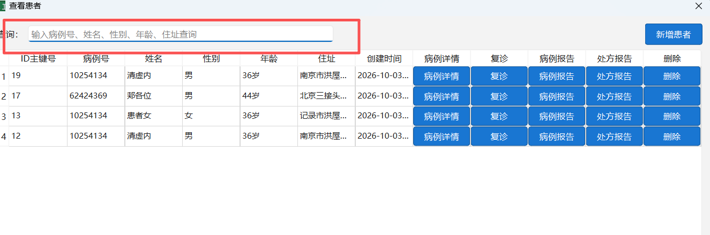
图 6-4 病例查询界面
6.5 选择中药处方
在患者详情页的"医嘱处方"区域，可以为当前患者开具中药处方。 支持从药品库选药、输入匹配、设置剂量和煎法等完整操作。
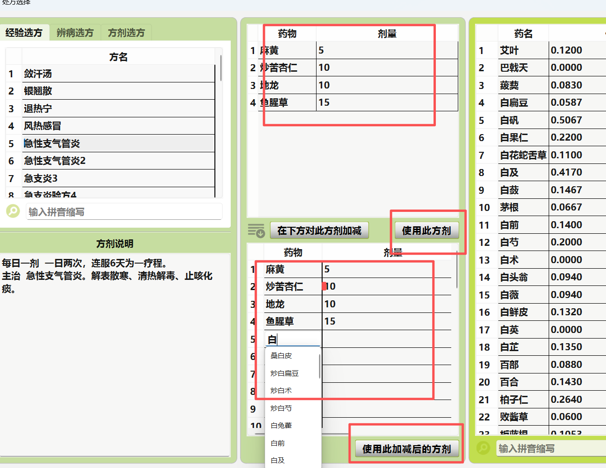
图 6-5 选择中药处方界面
操作步骤
- 在患者详情页找到"医嘱处方"表格区域
- 从右侧药品列表中点击药物名称，自动添加到左侧表格
- 或在表格"药物名称"列直接输入，系统自动匹配药品库
- 在"用量"列输入剂量（单位：克，显示为 g）
- 在"煎法"列选择煎服方法（先煎、后下、包煎等）
- 处方内容会实时同步到下方"医嘱处方"显示框
- 点击"保存"按钮保存当前处方
6.6 查看处方报告
处方报告是单独的处方打印页，包含患者基本信息和完整的中药处方， 可直接打印给患者取药使用。
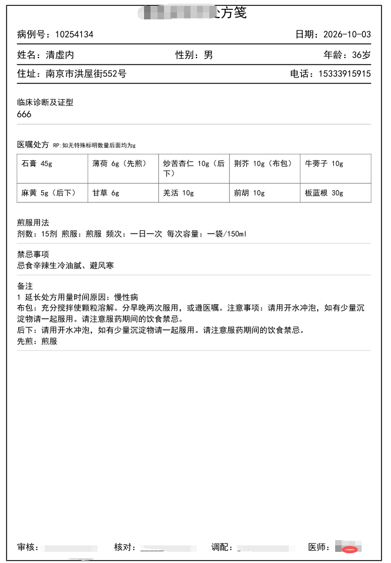
图 6-6 处方报告预览
操作步骤
- 在患者详情页填写好处方后，点击"处方报告"按钮
- 系统生成 PDF 格式的处方报告并弹出预览窗口
- 预览窗口中可放大、缩小、翻页查看
- 点击"打印"按钮可直接打印处方
- 点击"保存"按钮可将 PDF 文件保存到本地
处方报告内容
- 患者姓名、性别、年龄、病历号
- 临床诊断及证型
- 完整处方（每味药 + 剂量 g + 煎法标注）
- 剂数、煎服用法
- 医师签名、日期
6.7 查看病例报告
病例报告是完整的诊疗记录单，包含患者基本信息、四诊信息、 辨证分析、诊断结论、中药处方、医嘱备注等全部诊疗内容。
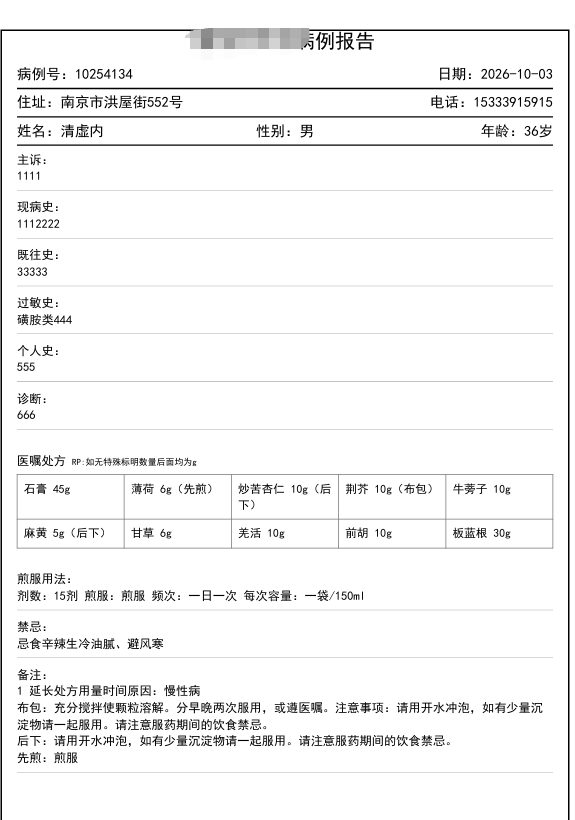
图 6-7 病例报告预览
操作步骤
- 在患者详情页填写完所有诊疗信息后，点击"病例报告"按钮
- 系统生成 PDF 格式的完整病例报告并弹出预览窗口
- 预览窗口中可放大、缩小、翻页查看全部内容
- 点击"打印"按钮可直接打印病例报告
- 点击"保存"按钮可将 PDF 文件保存到本地存档
病例报告内容
- 患者基本信息（姓名、性别、年龄、住址、电话等）
- 就诊日期、病历号、初/复诊
- 主诉、现病史、既往史
- 四诊信息（望、闻、问、切）
- 辨证分析及证型
- 诊断结论
- 中药处方（含剂量和煎法）
- 医嘱、备注、禁忌事项
- 医师签名
七、医嘱处方
医嘱处方是中医诊疗的核心功能，支持最多 40 味中药的处方开具， 可设置每味药的剂量、煎法，系统自动同步处方显示和煎法备注。
7.1 添加药物
- 在右侧药品列表中找到需要的药物
- 点击药物名称，自动添加到左侧药物表格中
- 也可以在表格的药物名称列直接输入药品名称或拼音，系统自动匹配
- 在"用量"列输入剂量（单位：克，显示为 g）
- 在"煎法"列选择煎服方法（如先煎、后下、包煎等）
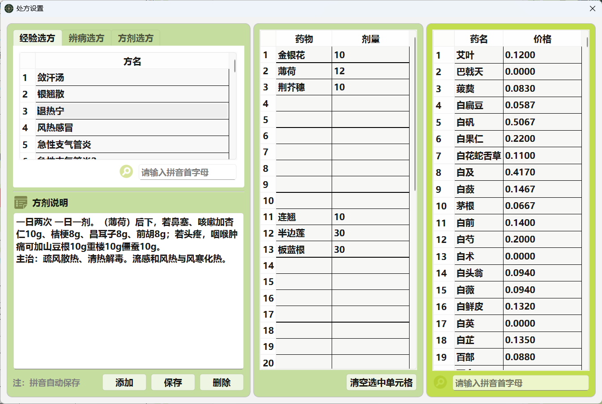
图 7-1 中药处方界面
7.2 删除药物
- 选中要删除的药物行
- 点击"删除药物"按钮
- 或直接清空药物名称
7.3 煎法设置
每味药都可以设置煎法，常用煎法包括：
| 煎法 | 说明 |
|---|---|
| 先煎 | 提前煎煮 20-30 分钟，再加入其他药物 |
| 后下 | 其他药物快煎好时再加入，煎 5-10 分钟 |
| 包煎 | 用纱布包好后与其他药物同煎 |
| 烊化 | 单独加温溶化后兑入药液中 |
| 冲服 | 用煎好的药液冲服 |
| 打碎 | 打碎后入煎 |
7.4 处方显示
- 药物表格中的内容会实时同步到下方"医嘱处方"显示框
- 每行显示 4 味药，药物之间以空格分隔
- 剂量后自动加
g单位 - 有煎法的药物在药名后以括号标注（如：
薄荷 6g（后下））
7.5 煎服用法
在处方下方可设置煎服用法的详细信息，包括：
- 剂数（多少剂）
- 煎服方式（水煎服等）
- 用法说明（每日几次，每次多少）
八、病例报告
病例报告模块用于完整记录患者的就诊信息，包括主诉、现病史、 诊断、处方、医嘱等内容，支持 PDF 格式打印输出。
8.1 病例信息字段
| 字段 | 说明 |
|---|---|
| 就诊日期 | 就诊日期，默认为当天 |
| 初/复诊 | 初诊或复诊 |
| 科别 | 就诊科室 |
| 职业 | 患者职业 |
| 过敏史 | 药物或食物过敏史 |
| 个人史 | 个人生活史等 |
| 主诉 | 患者主要症状及持续时间 |
| 现病史 | 当前病情的详细描述 |
| 既往史 | 既往病史 |
| 诊断 | 临床诊断及证型 |
| 医嘱处方 | 中药处方（自动从药物表格同步） |
| 煎服用法 | 煎药及服用方法 |
| 禁忌 | 饮食及生活禁忌，默认：忌食辛辣生冷油腻、避风寒 |
| 医嘱 | 其他医嘱说明 |
| 备注 | 特殊注意事项（含自动追加的煎法说明） |
| 医师 | 主治医生姓名 |
8.2 填写说明
- 在患者详情页的右侧滚动区域找到"病例报告"部分
- 依次填写各项内容，药物处方自动从上方药物表格同步
- 填写完成后点击"保存"按钮
- 保存成功后可点击打印按钮生成 PDF 报告
九、报告打印
系统支持两种报告的打印输出：处方报告和病例报告。
9.1 处方报告
- 点击"处方报告"按钮生成处方 PDF
- 报告包含患者基本信息和完整处方内容
- 每味药的剂量和煎法都会清晰显示
- 可直接打印或保存为 PDF 文件
9.2 病例报告
- 点击"病例报告"按钮生成完整病例 PDF
- 包含患者所有就诊信息：主诉、现病史、诊断、处方、医嘱等
- 支持 A4 纸打印
- 处方中每味药后标注剂量（g）和煎法
图 9-1 报告预览界面
十、药品管理
药品管理用于维护系统的药品库，支持药品的增删改查。 药品库中的药品可以在开处方时直接选用。
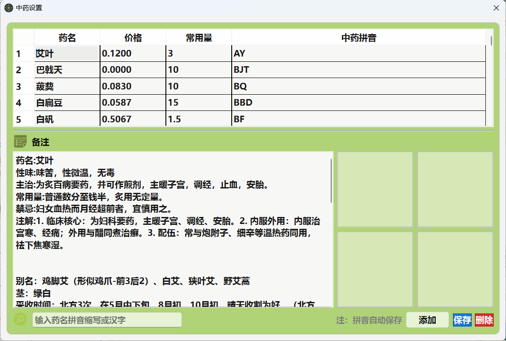
图 10-1 药品管理界面
10.1 新增药品
- 点击左侧菜单"药品列表"
- 点击"新增"按钮
- 填写药品信息：
- 药品名称
- 药品分类
- 单价
- 常用剂量
- 功效说明
- 点击"保存"完成添加
10.2 药品查询
- 支持按药品名称搜索
- 支持按分类筛选
- 支持拼音首字母快速检索
十一、用法管理
用法管理用于维护药物的煎服方法及其详细说明。 设置后，在开处方选择煎法时，系统会自动将用法说明追加到备注中。
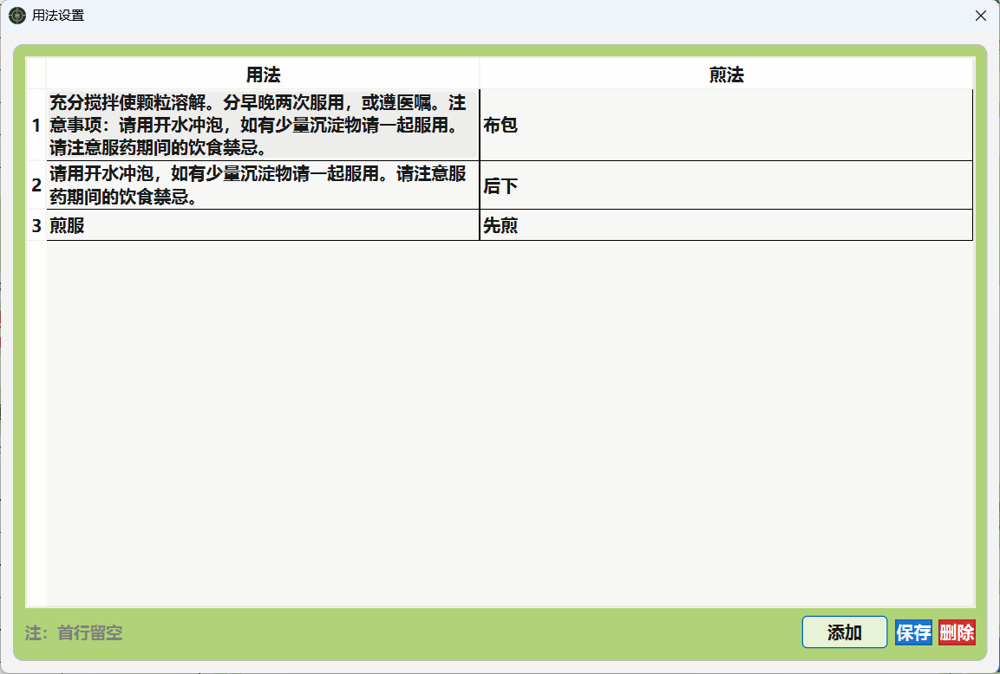
图 11-1 用法管理界面
11.1 用法字段
| 字段 | 说明 |
|---|---|
| 煎法名称 | 如：先煎、后下、包煎、烊化、冲服等 |
| 用法说明 | 该煎法的详细使用说明 |
十二、方剂管理
方剂管理用于维护经典方剂和常用方剂，开处方时可以直接调用整方， 提高开药效率。
图 12-1 方剂管理界面
12.1 新增方剂
- 点击左侧菜单"方剂"
- 点击"新增"按钮
- 填写方剂名称、分类、功效主治等信息
- 添加方剂组成（每味药及其剂量）
- 点击"保存"
12.2 调用方剂
在患者处方界面，可以从方剂库中快速选择已有的方剂，一键添加到处方中，然后根据病情进行加减调整。
十三、针灸设置
针灸设置用于维护针灸穴位和治疗方案，支持在患者资料中记录针灸治疗信息。
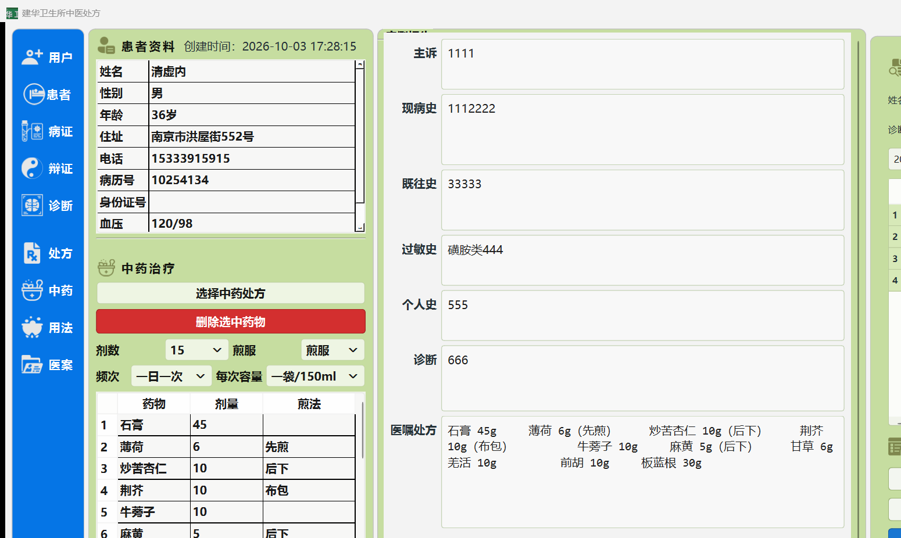
图 13-1 针灸设置界面
13.1 功能说明
- 穴位信息管理：穴位名称、定位、功效、主治等
- 针灸处方：可在患者诊疗中记录针灸治疗方案
- 在患者资料的"针灸/其他疗法"字段中记录
十四、用户管理
用户管理用于维护系统登录账号，只有管理员权限的用户可以访问此功能。
14.1 用户信息
- 查看当前登录用户的基本信息
- 修改登录密码
- 修改个人信息
十五、病症表现
病症表现模块用于系统地记录患者的四诊信息，包括望诊、闻诊、问诊、切诊等内容， 为辨证分析提供数据基础。
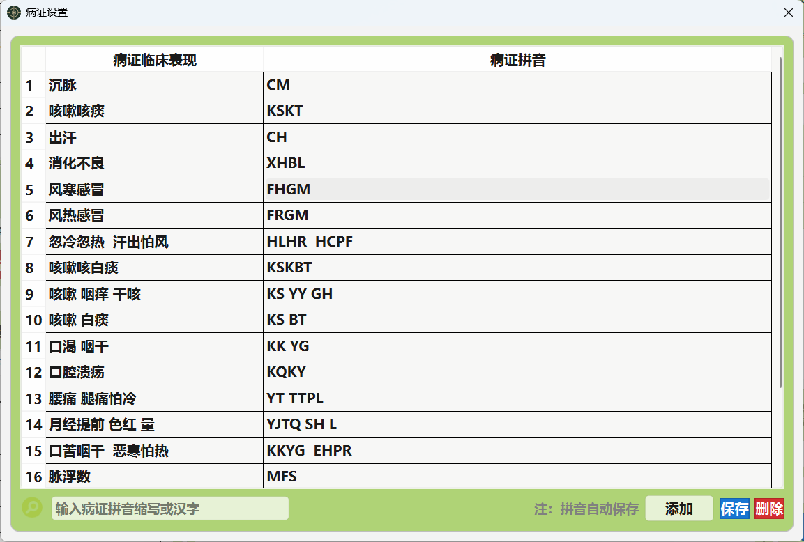
图 15-1 病症表现界面
15.1 主要内容
- 主诉：患者最主要的痛苦或最明显的症状
- 现病史：当前疾病的发生、发展、诊疗过程
- 既往史：既往患病情况
- 个人史：生活习惯、烟酒嗜好等
- 过敏史：药物、食物过敏情况
- 家族史：家族遗传性疾病
十六、辨证分析
辨证分析模块辅助医生进行中医辨证，根据患者的病症表现， 分析病因、病机，确定证型。
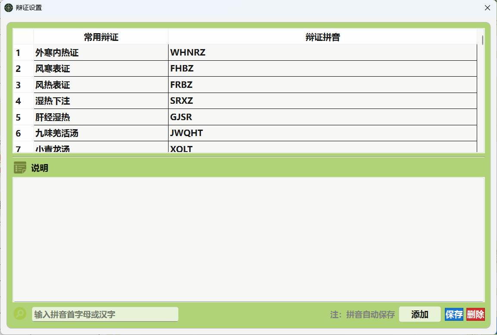
图 16-1 辨证分析界面
16.1 功能说明
- 记录辨证过程和思路
- 支持八纲辨证、脏腑辨证、六经辨证等多种辨证方法
- 可录入多个证型及其主次关系
十七、诊断结论
诊断结论模块用于记录最终的中医诊断结果，包括病名诊断和证型诊断。
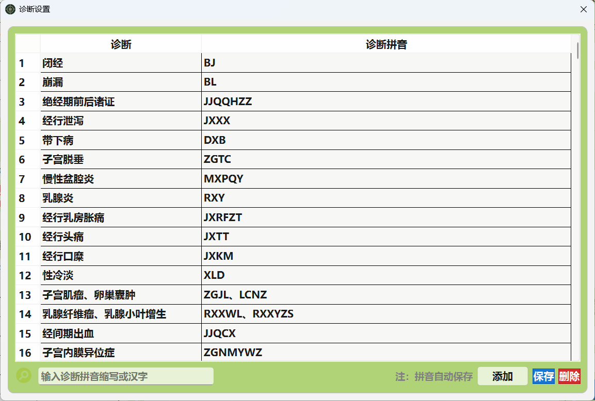
图 17-1 诊断结论界面
17.1 诊断内容
- 病名诊断：中医病名，如"感冒"、"咳嗽"、"胃脘痛"等
- 证型诊断：如"风寒束表证"、"肺阴虚证"等
- 治法：确定治疗原则和方法
十八、常见问题
Q1: 程序启动后提示"数据库连接失败"怎么办？
A: 请按以下步骤排查：
- 确认 MySQL / MariaDB 服务已启动
- 检查数据库地址、端口、用户名、密码是否正确
- 确认数据库是否已创建并导入了初始化脚本
- 检查防火墙是否阻止了数据库端口（默认 3306）
Q2: 忘记登录密码怎么办？
A: 请联系系统管理员，在数据库中重置密码。
Q3: 如何备份数据？
A: 定期使用 MySQL 管理工具（如 HeidiSQL、Navicat 等）导出数据库为 SQL 文件，存放到安全位置。建议至少每周备份一次。
Q4: 打印报告时字体显示异常怎么办？
A: 确保系统已安装中文字体（如宋体、微软雅黑等）。报告使用系统字体渲染，缺少字体会导致显示为方框或乱码。
Q5: 切换患者时界面卡顿怎么办？
A: 系统已做性能优化，如遇卡顿可尝试：
- 检查数据库服务器响应是否正常
- 确认网络连接稳定（如果使用远程数据库）
- 定期清理历史数据，减少数据量
Q6: 备注中的煎法说明可以手动修改吗？
A: 可以。系统自动追加的煎法说明只是辅助功能，您可以手动编辑备注内容。 但请注意，修改药物煎法后系统会重新同步煎法说明，建议最后再手动调整备注。
Q7: 处方最多支持多少味药？
A: 最多支持 40 味中药。药物表格支持滚动，可以通过滚动条查看全部药物。
Q8: 如何修改默认的禁忌内容？
A: 禁忌事项的默认值为"忌食辛辣生冷油腻、避风寒"，该默认值在代码中设置。 如果需要修改，请联系系统开发人员。
十九、快捷键
| 快捷键 | 功能 |
|---|---|
| Enter（回车） | 登录确认 / 查询 / 保存（部分场景） |
| Tab | 在输入框之间切换 |
| 鼠标滚轮 | 滚动查看页面内容 |
— 本文档结束 —
建华卫生所中医处方系统 · 用户使用手册